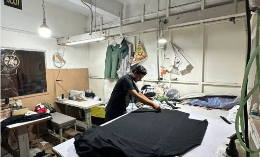
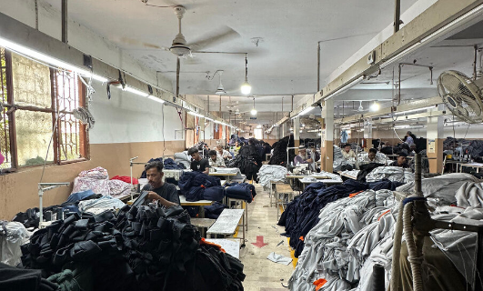
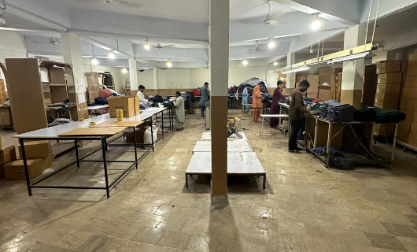

End-to-end capabilities
Every stage of garment production happens under our own roof in Karachi. This gives us complete control over quality, timelines, and execution.
Sampling
Our sampling department delivers precise, high-quality prototypes tailored to client specifications with speed and efficiency. We ensure perfect fit and feel before moving to mass production.
Cutting
Customer specification is the optimal consideration for our experts who carry out their job in a meticulously clean environment, minimizing waste and ensuring precision.

Stitching
A modern operational management system keeps the line smooth and uninterrupted. We use the latest machines of world fame, matching the high standard of stitching materials used.

Finishing
Our finishing and packing department is well-equipped with the latest system in a pristine environment. Every garment undergoes rigorous final checks before being packed.

Knits we work in
Our expertise spans a wide range of high-quality knitted fabrics.
Terry
Durable and highly absorbent loop-pile fabric.
Jersey
Soft, stretchy, and versatile single-knit fabric.
Thermal
Waffle-knit structure for superior insulation.
Fleece
Plush, warm, and exceptionally soft against the skin.
Interlock
Thick, double-knit construction with smooth surfaces.
Pique
Textured, breathable knit famous for polo shirts.
Polyester
Strong, wrinkle-resistant synthetic performance fiber.
Polycotton
The perfect blend of natural comfort and durability.